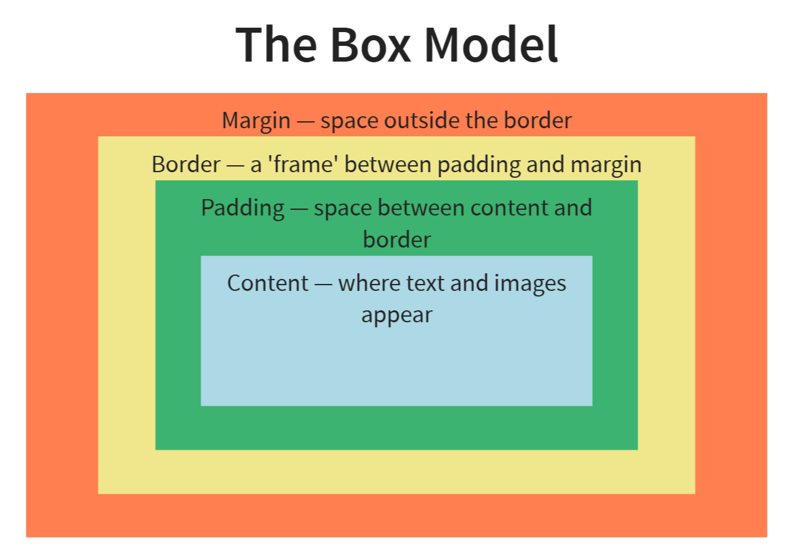

Every HTML element and run of text generates zero, one or more CSS boxes
Visually, the tree of elements becomes a tree of boxes.
In CSS, we can style the boxes.
Every box has an outer display type, either block or inline. This determines how the box is laid out in flow layout
If an element has a block outer display type (e.g. <p> tags):
Hence, they are laid out vertically
If an element has inline outer display type:
Hence, they are laid out horizontally
Every box also has an inner display type.
This determines how its contents (its child boxes) are laid out.
| CSS | outer | inner |
|---|---|---|
display: block |
block | flow |
display: inline |
inline | flow |
display: flex |
block | flexbox |
display: grid |
block | grid |
The initial value for all boxes is display: inline
The browsers default stylesheet applies a more sensible value
header, nav, main, section, article, aside, footer,
figure, figcaption, div, p, h1, h2, h3, h4, h5, h6,
ul, ol, form, fieldset {
display: block;
} Leaving the other elements inline.
You can change the elements display type in your own stylesheet with img {display: block;}

You may sometimes want to set the width or the height of a box or part of a box.
We can use absolute values or relative values
- Absolute values do not depend on anything else
- Relative values depend on something else
Avoid absolute values, embrace relative values
The total width of a box on the screen is:
left margin + left border + left padding + width of content + right padding + right border + right margin
You can set the width of an element with p { width: 50em; }. But what does this affect?
It depends on the box-sizing property
Many web developers like to use border-box, so they include this in their CSS.
*, *:before, *:after {
box-sizing: border-box;
} You can set the width, min-width and max-width to these values.
| Outer display type | Type of element | Width |
|---|---|---|
| block | any | behaves as expected |
| inline | replaced element (e.g. image) | |
| inline | non-replaced element (e.g. <em> or <i>) | has no effect |
In short, dont.
Not in short, avoid setting heights if you can, as it may require the use of a scrollbar, which end-users dislike